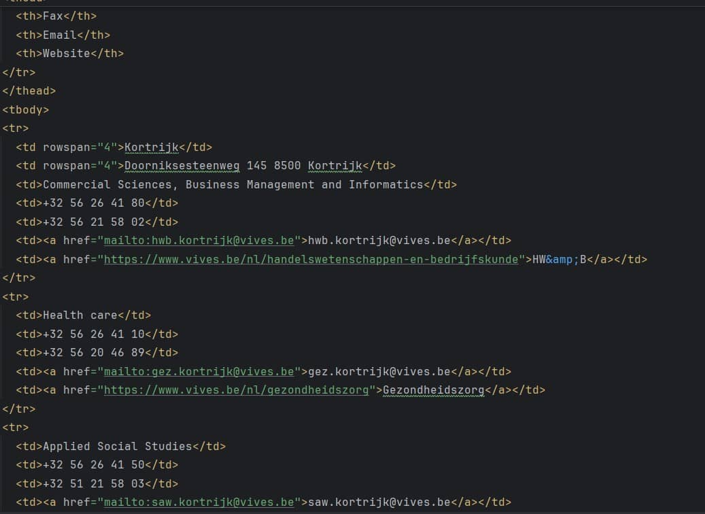
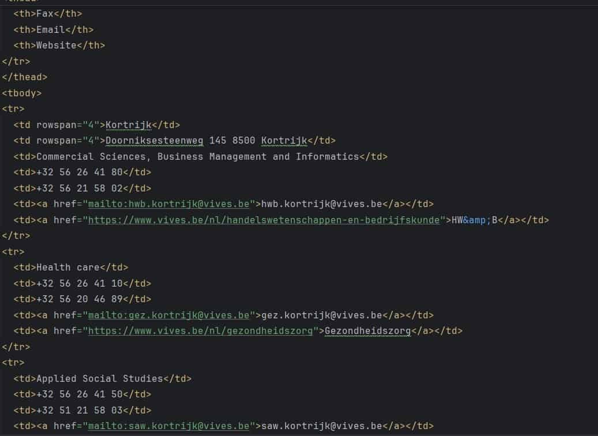

Foto van boom
Foto van boom met quality 90
Foto van boom met quality 70
Foto van boom met quality 40
Besluit → De kwaliteit gaat naar omlaag maar de grote van het bestand wordt ook veel kleiner.
Foto van boom met quality 90
Foto van boom met quality 70
Foto van boom met quality 40
Besluit → De kwaliteit gaat naar omlaag maar de grote van het bestand wordt ook veel kleiner.
Foto van code met Quality 70
Foto van code met Quality 40
Besluit → De grote van de foto wordt weer kleiner net als bij de vorige foto's, maar dat zorgt er ook voor dat je de tekst op de foto minder goed kan lezen.